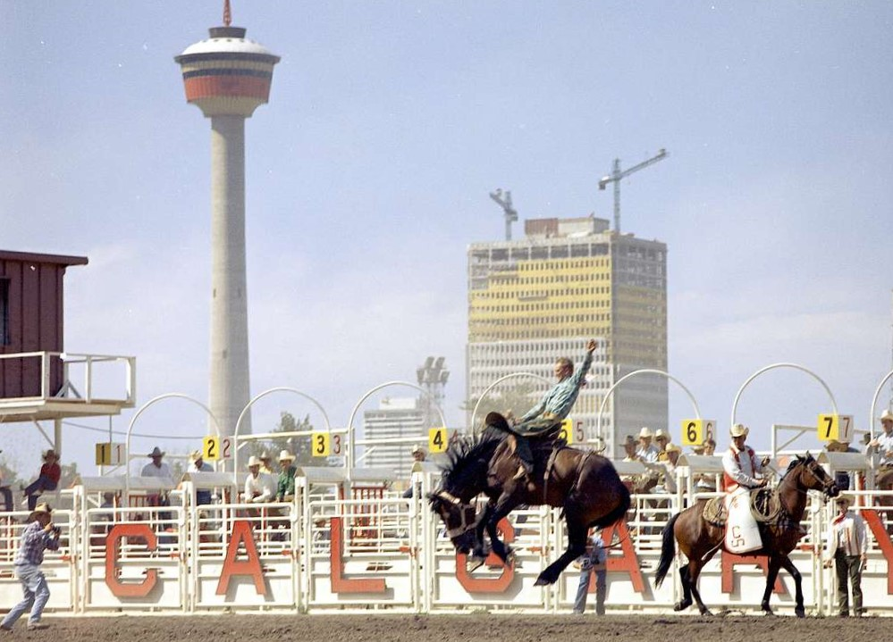

Introduction
The Calgary Stampede is a not-for-profit community organization that celebrates the western heritage, cultures and community spirit. Supported by over 2,500 passionate volunteers, the year-round events, programs and initiatives invest in youth, support agricultural programs, celebrate western culture and make a lasting economic impact in the city. Check out some of the major milestones taken to achieve what the Calgary Stampede is today by clicking on the buttons above!
